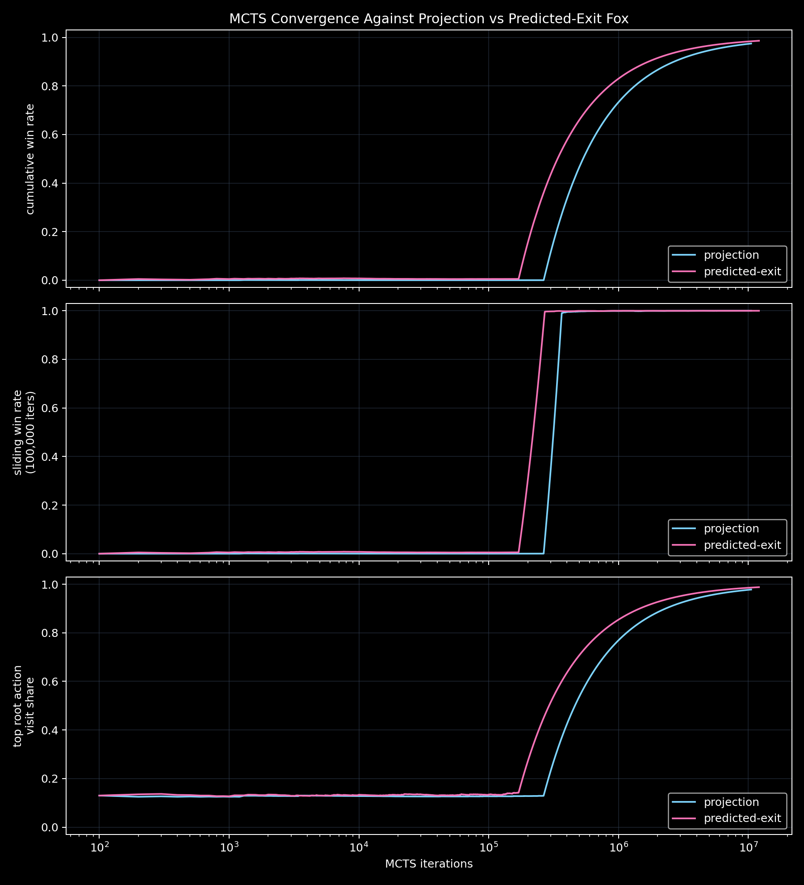
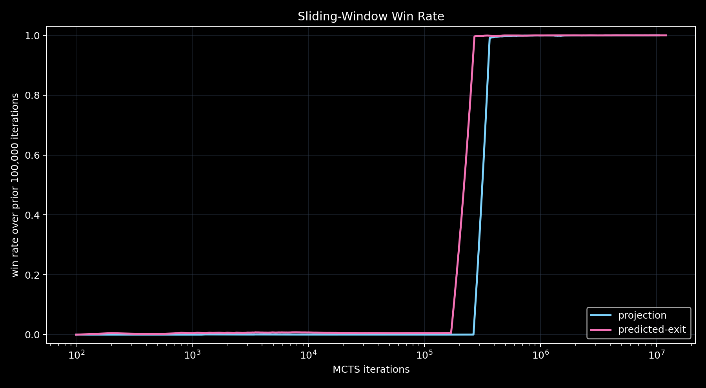

Duck and Fox
What does it mean for the fox to play well?
The classic puzzle has a beautiful orbiting solution. The game version adds a more slippery question: once the duck starts moving, what exactly is the fox trying to intercept?
The Standard Solution
In the continuous math puzzle, the duck swims on a small circle around the center until it is opposite
the fox. If the duck stays inside radius 1 / alpha, its angular speed around the center is
greater than the fox's angular speed around the shore.
For a 4x fox, that critical radius is 0.25. For the game here, the fox moves at 3.5x duck
speed, so the critical radius is about 0.286. Once the duck has built enough angular
separation, it swims straight to shore.
duck angular speed = v / r
fox angular speed = alpha v
duck can gain angle while orbiting if r < 1 / alpha
The Ambiguity
The original story says the fox runs around the lake, but it does not fully specify the fox's policy. In code, that missing sentence matters.
A projection fox chases the duck's current radial projection on the shore. A predicted-exit fox chases the shore point where the duck's current straight-line trajectory would exit. During orbiting, there is no straight-line exit target, so both policies chase the radial projection.
The projection fox is exploitable: a tiny directional commitment can make the fox run after the wrong moving point. The predicted-exit fox removes that particular loophole. The surprise is that MCTS still finds a different exploit.
MCTS Search
The search uses a sparse reward: a rollout is worth 1 only if the duck reaches shore with visible angular separation. The action set is deliberately game-like: short or long presses of up, down, left, right, plus an orbit button.
| Fox policy | Five-minute iterations | First win | Final root mean | Principal variation |
|---|---|---|---|---|
| Projection | 10,506,600 | 1,235 | 0.974 | down 0.25, left 0.5, left 0.5, left 0.5, left 0.5, left 0.25 |
| Predicted exit | 12,068,758 | 177 | 0.986 | down 0.5, left 0.5, down 0.5, down 0.5, down 0.5, left 0.25 |
Convergence
In both five-minute runs, the early search mostly sees losses. Once a winning family appears, the tree rapidly concentrates visits on one root action and the sliding-window win rate jumps toward 1.


What I Think This Shows
MCTS is useful here not because it discovers the textbook solution directly, but because it exposes the assumptions hidden inside the rules. A projection-chasing fox creates one game. A predicted-exit fox creates another.
The predicted-exit fox invalidates the most obvious exploit. But the duck can still win by changing its intended exit point over time. That is not the same as the clean orbiting proof, and it is exactly the kind of behavior that makes the game version worth studying separately from the math puzzle.